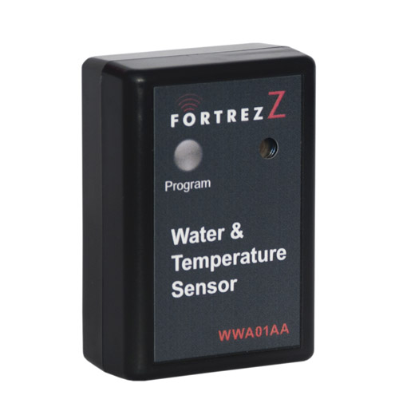

FortrezZ Water Alarm - WWA-02AA¶

Brief information¶
- Power: Two AA alkaline batteries
- Battery Life: Calculated to be 1 to 2 years with no alarms and default Z-Wave TM network settings
- Frequency Range: 908.4MHz (US); 868.4MHz (EU)
- Distance Range: Max 100ft line of sight in unobstructed environment
- Size (LxWxD) and Weight: 3” (76 mm) x 2.1” (53mm) x 1.1” (30mm)
- Product Weight: 0.24 lb (109 g)
- Operating Temperature: -10oC (14F) to +70oC (158F)
- Reported Temperature: Reported temperature is at the unit and has a +/- 2 degC accuracy
- System Requirement: Any Z-Wave TM enabled network and controller.
How to add to VENUS app¶
- 1. Activation
- Press “Add button” (button ‘+’) in app
- Press program button once
- The LED will blink when the inclusion completes
- Wait for VENUS scan & detect this device and inform in app
- 2. Reset then re-add
- Press “Add button” (button ‘+’) in app
- Press and hold the button for approx. 2 seconds to reset
- The LED will blink to indicate device is reset
- Press program button once to add
- The LED will blink again, the adding completes
- Wait for VENUS scan & detect this device and inform in app
LED indicator¶
1 fast blink Wake-up, notification sent (after quick button press and device is in z-wave network) 2 fast blink Water alarm 3 fast blink Temperature Alarm (either high or low setpoint triggered) 4 fast blink An active alarm has been cleared (when a water alarm or a temperature alarm is no longer active) 5 fast blink Low Battery (repeated every approx. 40 seconds) 1 slow blink Device in z-wave network (also, after button held while in-Network) 3 slow blink Device is removed from z-wave network (also given if adding was not completed)
Wake-up information¶
- Wakeup1: Power saving design wakes up every 4 seconds to test water and freeze sensor
- Wakeup2: Once every 4 approx. hours (default) unit wakes up to send a notification to controller to query and update the status of the unit. A controller can change this wakeup interval. Battery life is decreased when the wakeup interval time is shorter.
How to add/remove associated device(s) to¶
This device supports 1 association group with 5 nodes.
To add associated device(s) to this device, below action is required:
- Add z-wave notified-devices (which will be associated to this sensor) to VENUS
- Select Associate button and then select notified-device(s) to add
- Wake-up this sensor: Press Program button once
- If successful, pop-up notification displays in VENUS app
To remove associated device(s) from this sensor, below action is required:
- Select Associate button and then select notified-device(s) to remove
- Wake-up this sensor: Press Program button once
- If successful, pop-up notification displays in VENUS app
Configuration description¶
Low temperature threshold
- This setting defines low temperature threshold. Sensor will alarm in case of detected temperature is lower than this threshold value
- Available: -127 ~ 127 degrees in Celcius
- Default: 4
- Parameter 1, 1 byte size
High temperature threshold
- This setting defines high temperature threshold. Sensor will alarm in case of detected temperature is higher than this threshold value
- Available: -127 ~ 127 degrees in Celcius
- Default: 70
- Parameter 2, 1 byte size